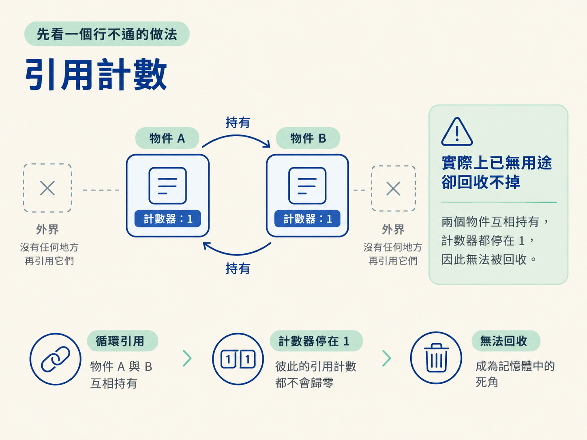
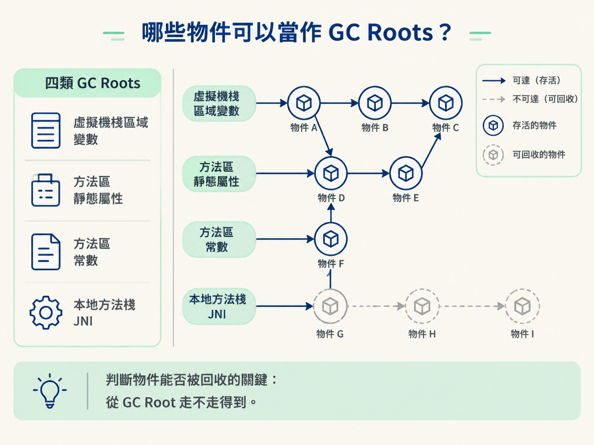
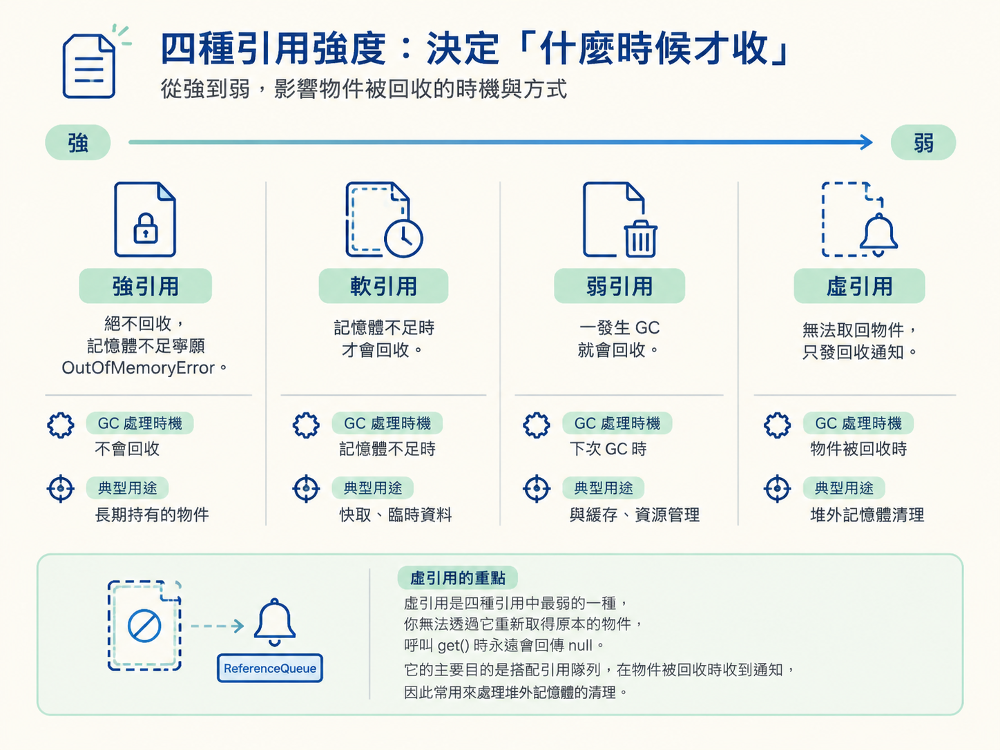

你可能遇過這種服務：剛上線時一切正常，記憶體卻慢慢往上爬。撐了三、五天，服務開始變慢；重啟之後又恢復正常，但過幾天記憶體再次升高。同事問「到底是哪裡漏了」，你盯著程式碼，卻很難立刻說出答案。
要找出記憶體洩漏，得先回答一個更基本的問題：JVM 到底怎麼判斷一個物件「已經沒人用了，可以丟掉」？如果連物件生死的判準都不清楚，就很難解釋為什麼某個物件一直沒有被回收。
這一節會從這條判準開始，帶你理解 JVM 的可達性分析、GC Roots，以及四種引用強度。重點不是「沒人指向我就丟掉」，而是：從幾個固定的根出發，走不到我，才代表我可以被回收。
學完後，你應該能講清楚 JVM 為什麼使用可達性分析，而不是引用計數；說出四類 GC Roots；並用四種引用強度解釋「這個物件什麼時候才會被回收」。
最直覺的想法，是替每個物件放一個計數器。每多一個地方引用它，計數器就加一；引用斷開時，計數器就減一。當計數器歸零，就代表沒有地方使用它，可以回收。
這種方法叫引用計數法。它的規則簡單，看起來也很合理，但有一個始終解不掉的死角：循環引用。
假設物件 A 持有物件 B，物件 B 又持有物件 A，而外界已經沒有任何地方引用它們。A 和 B 實際上都已經沒有用了，卻因為彼此互相指著對方，兩個計數器都維持在 1，永遠不會歸零。
結果就是：這兩個物件明明已經是垃圾，卻會一直留在記憶體裡。也因為這個問題，HotSpot 這類工業級 JVM 並不採用引用計數法作為主要的垃圾判斷方式。

JVM 採用的是可達性分析。你可以把記憶體裡的所有物件想成一張圖：物件是圖上的節點，物件之間的引用就是節點之間的線。
接著，JVM 會選定幾個固定的起點，這些起點稱為 GC Roots。它從 GC Roots 沿著引用一路往下走：
這有點像看一張捷運路線圖。你從家門口出發，只要能沿著路線抵達某個車站，那個車站就是「可達的」；完全連不上任何路線的車站，就不再是旅程的一部分。
因此，判斷物件是否存活的重點，不是「有沒有其他物件指向我」，而是「從 GC Roots 出發，能不能走到我」。回頭看剛剛的 A 和 B，雖然它們彼此相連，但只要從任何 GC Root 都走不到它們，這個循環就不會妨礙回收。
GC Roots 是面試很常追問的細節。主要可以分成四類：
User u = new User();，只要方法還沒有結束，u 就可以視為一個根，它指向的 User 物件也就不能被回收。static）所引用的物件。例如 public static User user;，只要類別仍被載入著，這個 user 就可以作為根。final）所引用的物件，例如字串常數池裡的引用。記住這四類，你就有了一個實用的判斷方向：某個物件為什麼還沒有被回收，通常是因為仍然有一條引用路徑，從某個 GC Root 連到了它。

排查記憶體洩漏時，MAT 工具裡的 Path to GC Roots 做的正是這件事：沿著引用往回追，找出「究竟是誰還牽著這個物件」。
可達性分析回答的是「這個物件還能不能從 GC Roots 走到」。但即使物件仍然存在，GC 對不同引用的處理態度也不一樣。
Java 提供四種引用強度，讓程式設計師可以表達物件的重要程度。它們真正的差別，可以濃縮成一個問題：GC 什麼時候可以把它收走？
| 引用 | 寫法 | GC 的態度 | 典型用途 |
|---|---|---|---|
| 強引用 | Object o = new Object() | 絕不回收，記憶體不足時寧願丟出 OutOfMemoryError | 日常最普通的引用 |
| 軟引用 | SoftReference | 記憶體充足時保留，記憶體快不足時才回收 | 對記憶體敏感的本機快取，例如圖片快取 |
| 弱引用 | WeakReference | 只要發生 GC，不論記憶體是否充足都會回收 | ThreadLocal 的 key、WeakHashMap |
| 虛引用 | PhantomReference | 無法取回物件，只在物件即將被回收時發出通知 | 管理堆外記憶體的釋放 |
強引用就是平常最常寫的引用。只要它仍然指向某個物件，GC 就不會動它。即使記憶體快要撐爆，JVM 也不會因為記憶體壓力就提前回收，最後可能直接丟出 OutOfMemoryError。
軟引用代表「這個物件有用，但不是非留不可」。它很適合用在快取：記憶體充裕時，快取內容可以繼續留著；記憶體吃緊時，GC 就能清掉它們，把空間讓給更重要的物件。這樣快取就不至於反過來把整個系統撐死。
弱引用的生命週期更短。只要 GC 啟動，不論當下記憶體是否足夠，弱引用所綁定的物件都可能被回收。常見例子是 ThreadLocal 裡的 key，以及 WeakHashMap。
以 WeakHashMap 為例，當某個 key 不再被外部的強引用持有時，對應的鍵值對就能跟著被清掉，避免資料已經沒人使用，卻仍然被容器一直留住。
虛引用是四種引用中最弱的一種。你無法透過它重新取得原本的物件，呼叫 get() 時永遠會回傳 null。它存在的目的，是搭配引用佇列，在物件被回收時收到通知，因此常用來處理堆外記憶體的清理。

JVM 判斷物件是否還活著，靠的是可達性分析，而不是引用計數，因為引用計數解決不了循環引用。可達性分析從四類 GC Roots 出發，走得到就是存活，走不到就是可回收。至於「什麼時候才會被回收」，則由引用強度決定：強引用死不放，軟引用在記憶體不足時才放，弱引用遇到 GC 就放，虛引用則只負責通知。
這裡其實連著兩個不同問題：第一個是「物件還有沒有活著」，答案要看它是否能從 GC Roots 被走到；第二個是「GC 何時可以處理它」，答案則要看引用的強弱。
知道誰是垃圾之後，下一個問題才接得上：這些垃圾實際上要怎麼被收走？下一節會介紹三種垃圾收集演算法與分代策略，也會說明為什麼無論怎麼優化，GC 都可能讓服務暫停一下。